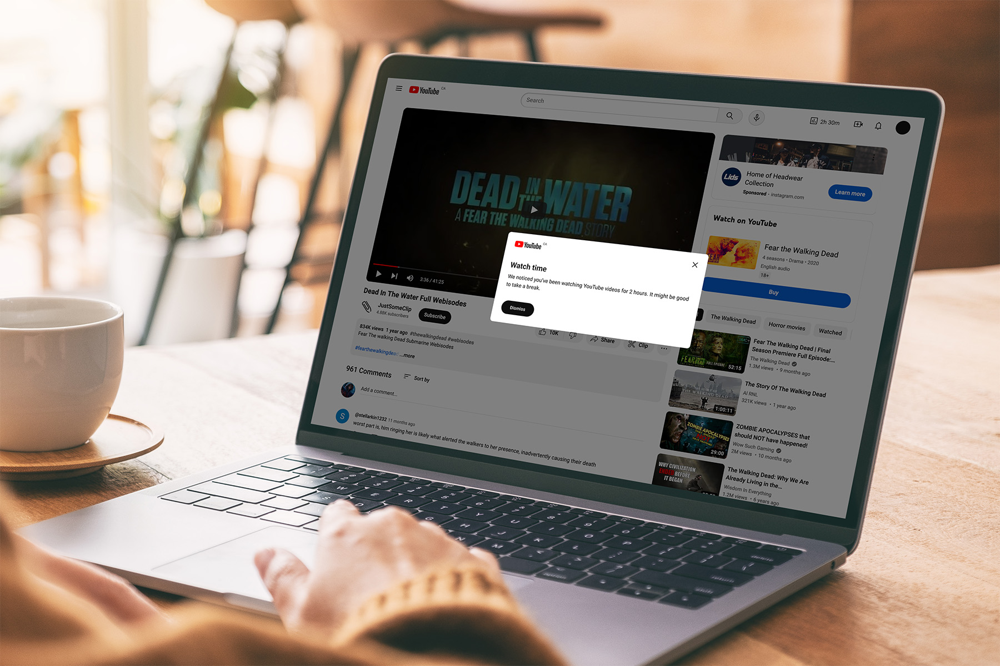
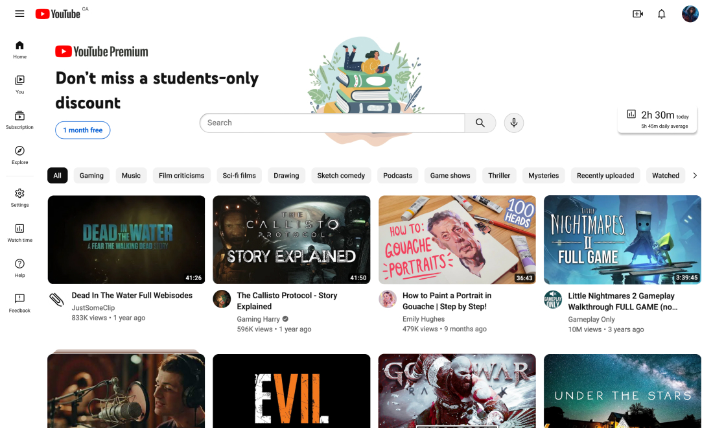
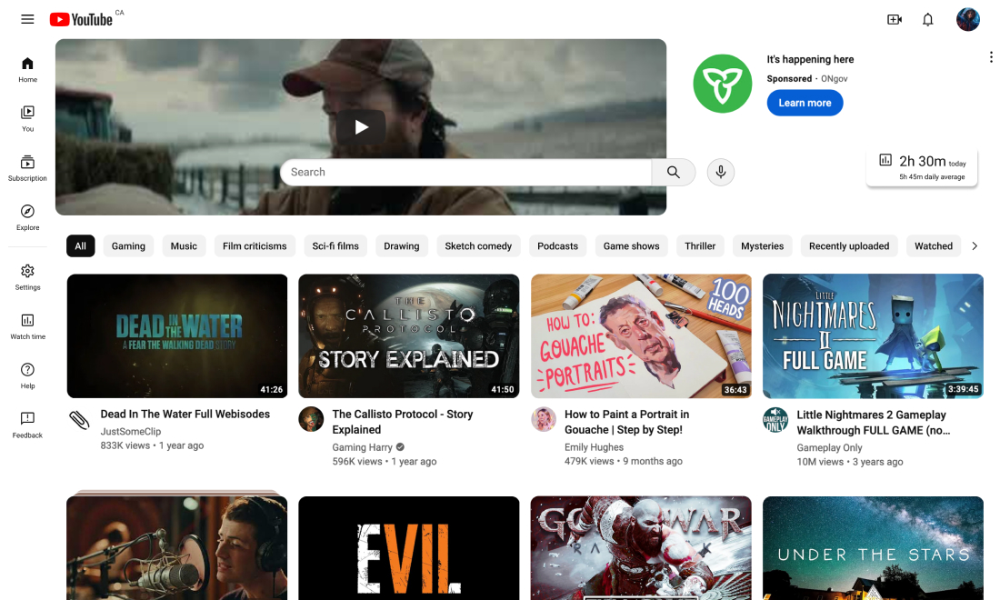
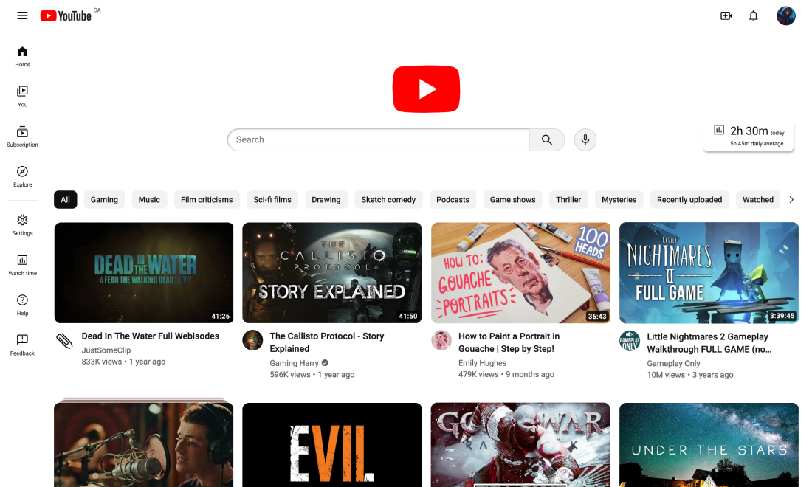
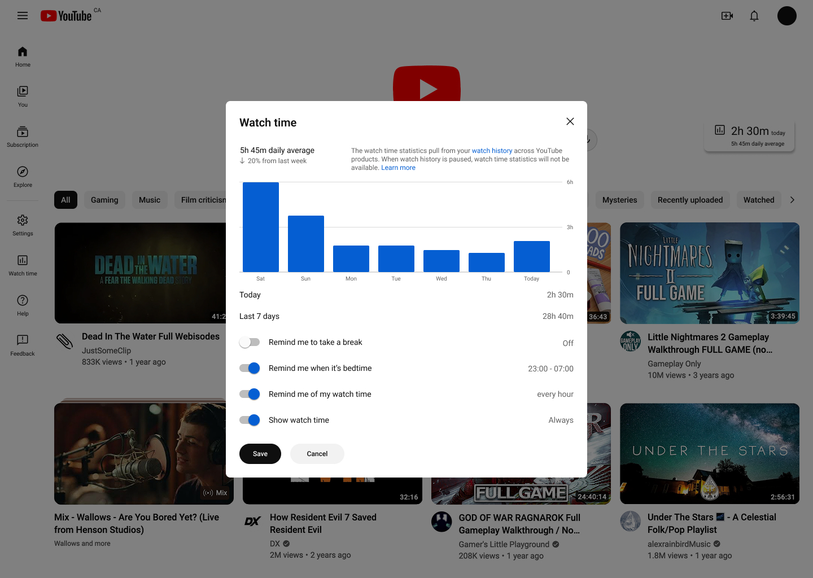
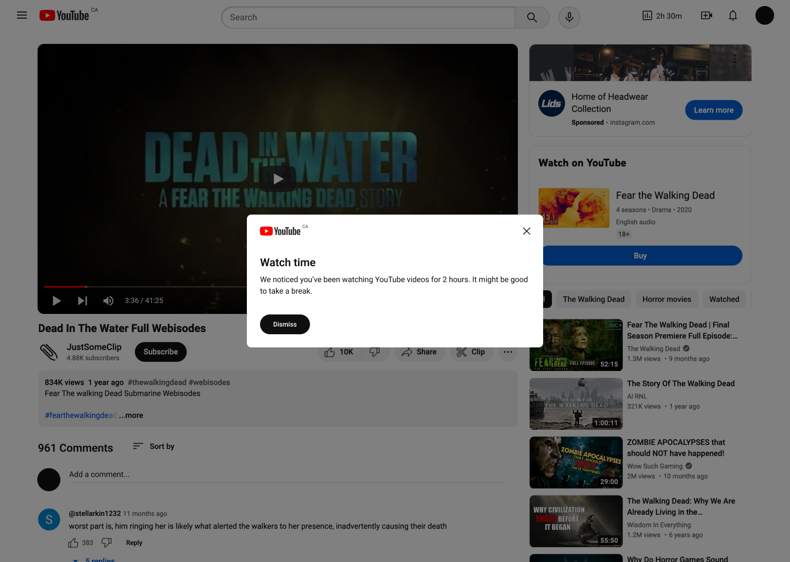

Designing a more mindful YouTube experience
Overview
YouTube's features that were initially designed for users convenience have made it easier for the platform to maximize watch time and engagement, while raising concerns about digital well-being. There are opportunities to redesign the YouTube platform and interface to better accounts for users' well-being. I reimagined the viewing experience to encourage more intentional actions and remind users to take breaks, with little intrusion on their experience.
Tools
Figma
Timeline
Jan – Apr 2024 (13 weeks)
The challenge
YouTube is designed to keep users on the platform
By encouraging and recommending sensational and attention-grabbing content in combination with autoplay and queuing features, YouTube facilitates binge-watching and increases watch time. It generates more revenue at the expense of producing misleading content, fragmenting users' attention, and potentially causing screen addiction.
Although YouTube has introduced break reminder and watch time report to encourage more control of personal usage, these features are limited and can't effectively counter the platform's primary goal of keeping users watching.
“How might we redesign YouTube interface to reduce distractions and encourage mindful usage with minimal intrusion on the user's experience?”
The solution
Redesigned Home feed for intentional usage
This redesigned Home feed puts more focus on the search bar and encourages more active query for content. Users are shown a finite number of content at a time and can actively load more videos. User testing found that users were not bothered by the redesigns and additional workload when looking for content on their Home feed.
More accessible time tracking capability
Time tracking and break reminder features are only available on the YouTube app and were added to the redesigned web platform, with periodically alerts of long continuous usage to allow users to monitor their usage and remember to take breaks. They are not intrusive to test participants and help them be more mindful when using the platform.
Research
Understanding how YouTube operates
YouTube is a global social platform and crowd-sourced video library. It has gone through constant changes with its interface, services, and guidelines—going from a simple video sharing site to incorporating content streaming, social engagement, and monetization opportunities for creatives and companies.
The digital ecosystem
The primary parties of YouTube's digital ecosystem are the creators, the viewers, and the advertisers. Creators upload content for viewers to access. Brands pay YouTube to display their advertisements and partner with creators to promote their products. This revenue ensures free and accessible content for viewers and compensation for creators. As the platform hosting these activities, YouTube monitors and regulates them, and ensures all parties adhere to its guidelines and are satisfied (Eves).
YouTube operates on an ad-driven model
Revenue is generated through advertisements shown on the platform. This is a part of YouTube's Freemium experience. Most of its content and features are available to the general public at no cost, in exchange for ad placements on the content they access. YouTube offers subscriptions for an undisrupted experience, offline viewing, and access to exclusive content.
Advertisers are vital
Ad revenue ensures the viewers have free access to content, the creators receive compensation for their works, and the platform makes enough profit to keep running.
Keeping advertisers happy is a priority for both YouTube and its creators. YouTube's algorithm favours content that can generate more engagement and watch time. Creators are encouraged to make advertiser-friendly videos and garner as many views as they can while avoiding demonetization.
YouTube operates on an attention-driven model
The longer viewers stay on the platform, the more YouTube benefits. The algorithm, autoplay, and queue aim to keep viewers on the platform for as long as possible. The algorithm pushes content that interests the viewer based on their watch and search history. The autoplay feature automatically starts the next suggested video once the current one ends, and the queue allows viewers to create a temporary playlist of videos that will autoplay.
Creators are encouraged to design their thumbnails and titles to be as eye-catching as possible to generate more revenue. These videos distract viewers, grab their attention, keep them on the platform, and are favoured by the algorithm and pushed to the forefront of viewers' feed.
Image from semrush.com/blog/what-is-clickbait/
The constant stream of content keeps viewers on the platform and increases watch time and revenue for YouTube, but at the expense of fragmenting viewers' attention and unnecessary high social media usage. Prolonged watch time can contribute to screen addiction, reduced attention span, and mental health concerns, especially among young viewers.
Understanding the viewers
I interviewed and observed how the people around me use YouTube. There isn't a significant shift in how different age groups use YouTube. The differences in the type of content is unavoidable as people's interests naturally change as they grow older.
The most interesting information I gathered from interviews and observations is the occurrence of people playing something in the background while they work or engage in other activities. It's not an occurrence exclusive to YouTube, but YouTube is one of the more convenient tools to fill in the silence.
Primary school students
Uses YouTube primarily for leisure, watches both long-form and short-form videos of their interest.
High school students
Uses YouTube for leisure and to pass time, watches both long-form and short-form videos of their interest. Occasionally look for tutorials and educational content.
College-age adolescents
Uses YouTube for entertainment and tutorials, more often in long-form format than short-form. Usually pays attention to the content of tutorials and plays other videos in the background while they work or do household chores.
Adults
Uses YouTube for tutorials (cooking, exercising, etc.) and product reviews, occasionally plays longer videos or music playlists to pass time when eating, cooking, or doing other household chores.
Define
A more mindful viewing experience
This project aims to redesign the current experience to be more cognizant of viewers' attention by encouraging them to be intentional with their actions.
Highlight the values and benefits YouTube currently provides instead of competing with other social media platforms.
Reduce mindless scrolling and encourage users to be more intentional with their actions without compromising ease of use.
Reduce screen time and encourage viewers to take breaks, while ensuring creators receive engagement and compensation.
The Viewer archetype
The Viewer accesses content on YouTube through their laptop, tablet, phone, or TV for different purposes. They use the platform when commuting, when they're home, or when they need to look up something at school or work.
Their primary goal is to find content on the platform that meets their purpose at the time (leisure, learning, etc.)
Their behaviours
- Entertainment: Access content for leisure, to pass the time, and to watch topics and creators that interest them.
- Learning: Find tutorials for school, work, or other activities (e.g. exercising, cooking).
- Background noise: Fill in the silence while working or engaging in daily activities.
Their pain points
- Getting irrelevant recommendations.
- Having a difficult time finding interesting content.
- Search results don't include what they were looking for.
- Content can be distracting and lead to procrastination.
Design changes that balance mindful usage and revenue
It's difficult to significantly change how the platform works without impacting its revenue or harming the user experience, especially without more in-depth business understanding. However, there are smaller changes that can reduce distractions on the platform and encourage users to manage their screen time:
The addition of a time tracking feature for the website.
A redesign of the Home feed to put more focus on the search function.
The removal, or reduction, of infinite scrolling.
With over 2.7 billion active users worldwide, YouTube still benefits if some of them spend less time on the platform. Its entertainment and education values, in addition to the long-standing brand name, are competitive factors that emerging platforms cannot benefit from.
Develop
Placing more emphasis on the search bar
I wanted to keep the general layout of the page, then added the changed and new features. More focus was put on search bar and filter tags to encourage viewers to search for what they want, rather than passively exploring their recommendations.
The additional space around the search bar was initially intended for large advertisement banners since its prominence could be beneficial for revenue—this revenue could be enough to make the case for removing mid-roll and non-skippable ads, improving the viewing experience. I mocked up three advertisement experiences for user testing: (1) works more cohesively with the search bar, (2) is larger and more invasive, (3) removes the advertisement completely.
1
2
3
The large advertisement was the first thing to capture people's attention. While this can generate more revenue, it was found to be too distracting and took people's attention away from the search bar, which is something I want to avoid.
Removing the ad altogether creates a less distracting experience and highlight the search bar more. This won't generate revenue but will benefit users.
Adding time tracking and break reminder
The “Watch time” feature allows the user to monitor their usage. This is developed from the existing “Time watched” feature on the app.
Users can enable this widget to be displayed onscreen as they use the platform. When the user watches a video, the watch time will be displayed on the header and will update when they watch a new video, instead of being an active timer which can cause anxiety. In addition, a popup alerts viewers of long usage periods.
 User testing found that the placement of the timer is noticeable enough and does not cause much mental drain. Participants found this feature helpful and weren't aware of its existence in the app.
Test participants suggested allowing users to set their own interval for the “long usage” popups, incorporating graphics and more engaging visual elements, and trying to reduce its repetitiveness. I didn't have enough time during this project to implement these feedback, but they will be valuable adjustments if I revisit this project.
Removing infinite scroll
A finite number of content is displayed at a time—the user can click on “Show more” to load more videos. User test participants reported that this button did not create much additional workload. They weren't bothered having to click on this button, nor did they notice this was an additional step to the current experience.
If users are on the Home feed, they will be given the option to actively search and filter for results after multiple clicks. The search and filter prompt was mostly ignored during testing (i.e. users would not follow its suggestions) but it was easily dismissible and still informed users of their options.
Bringing everything together
I made an interactive prototype in Figma using screenshots from YouTube to demonstrate this reimagined experience. This prototype was used for user testing then improved upon based on user feedback and suggestions.
Next steps
I want to conduct additional user testing to thoroughly assess the effectiveness and usability of the proposed redesigns.
This project was developed for desktop first mostly for design convenience. I should have approached this from mobile design first, then scale up. Based on what I have made, I would like to develop mobile wireframes of the redesigns.
There are other changes to the platform that could have been made, but I didn't have the time, resources, and enough understanding of the platform to propose them.
Navigating the new experience with ads
YouTube's crackdown on ad blockers started in 2023 and by summer of 2024, it has set up a three-strike system globally to deter the use of ad blockers. In addition to the crackdown, ads have been appearing more frequently. While these tactics may have succeeded in pushing the viewers who rely on the platform to pay up, they also pushed the rest away.
Balancing traditional and short-form content
As short-form content became more popular, YouTube began offering Shorts to compete with Instagram reels, TikTok videos, and similar short-form content. This has been changing the way creators and viewers interact with the platform.
There are opportunities to reevaluate the current experience to achieve a better balance between long-form and short-form content, highlight the traditional format, or adapt short-form content for desktop platforms.
Takeaways
My personal experience affected much of the initial exploration. Through secondary research and user interviews, I discovered features and platform behaviours I did not know about, which is also a common observation among the people I talked to. This might indicate that the overwhelming number of features are not organized properly to inform users of their existence and functions. This doesn't necessarily mean that the platform is badly designed—there are constant changes to improve the user experience and it's difficult to add features without drastically redesigning the platform.
Identifying a direction to encourage users to stop using the platform momentarily while still ensure revenue generation was a challenge. With more time and business understanding, I would have liked to approach this project from a different angle than monitoring screen usage.
References
Eves, Derral. “The YouTube Formula.” Wiley, 2021. O'Reilly, https://learning.oreilly.com/library/view/the-youtube-formula/9781119716020/
Fox, Gary. “YouTube Business Model: How A Video Platform Model Works.” Dr. Gary Fox, 2024, https://www.garyfox.co/youtube-business-model/